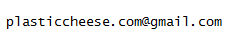

plasticcheese.com
Note that the site will be down for a little while whilst I change a few things.
In the meantime, the latest version has just been released and is available here -
tt-setup.zip Version 1.0.7715.32773
Latest changes are as follows:
- - Removed the + and - buttons from the UI as they aren't really necessary
- - Made it easier to move time from one task to another
- - Press "Ctrl -" (Control minus) to subtract one minute from the current task and add it to the "Nothing" task
- - Press "Ctrl+Shift -" (Control shift minus) to subtract 5 minutes from the current task and add it to the "Nothing" task
- - Press "Ctrl +" (Control plus) to add one minute to the current task and subtract it from the "Nothing" task
- - Press "Ctrl+Shift +" (Control shift minus) to add one 5 minutes to the current task and subtract it from the "Nothing" task
- - Updated settings form
- - Font no longer appears blurry when using scaling over 100% in Windows
